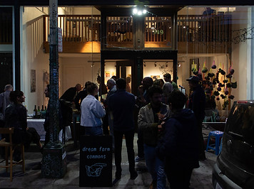

Political Birthdays
Curated by Susannah Magers
October 5 - November 3, 2018
Participating artists: Anna Luisa Petrisko (Los Angeles, CA), Artemisa Clark (Los Angeles, CA), Grace Rosario Perkins (Albuquerque, NM and Oakland, CA), Jessalyn Aaland (Oakland, CA), Mary Tremonte (Pittsburgh, PA and Toronto, ON), Lukaza Branfman-Verissimo (Oakland, CA), Mary Beth Magyar (Rochester, MN), Sarah Hotchkiss (San Francisco, CA), Weird Allan Kaprow (Portland, OR), Virginia Broersma (Long Beach, CA), Christine Wong Yap (Queens, NY)
Political Birthdays is a group exhibition comprised of video, performance ephemera, flags, textiles, painting, mixed-media, Risograph posters, fabric, sculpture, and works on paper. The exhibition is one such offering—an orientation—that emphasizes visibility, agency, and collaboration as resources, sites of inquiry, and tools. The works in Political Birthdays leverage sculptural forms, language, patterns, color, text, and texture as political signifiers that inhabit and perform a kind of coded visibility.
Taking up themes ranging from immigration, sexuality, and social justice, to identity, resilience, and marginality, each artist employs strategic and symbolic visual and conceptual devices that reframe and reflect back intentional, intersectional aims.
The title, Political Birthdays, is an homage to a quote by the late founder of The Lesbian Tide, activist, organizer, publisher, and writer Jeanne Cordova. In Gregorio Davila's 2017 film, Jeanne Cordova: Butches, Lies, and Feminism, Cordova recalls when she discovered the Daughters of Bilitis and describes this as her "political birthday," a moment of recognition and surfacing of her passion and dedication to social justice, civil rights, and community organizing.
